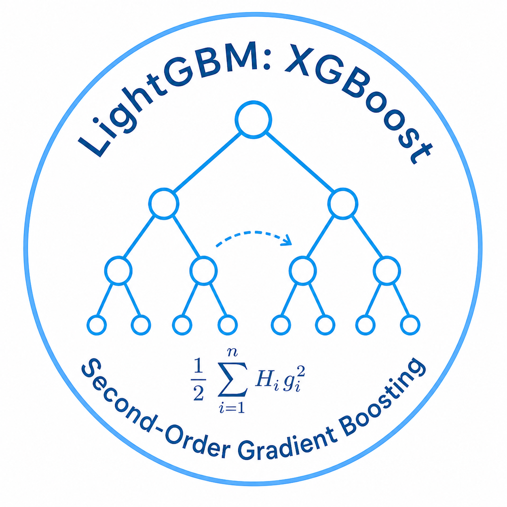
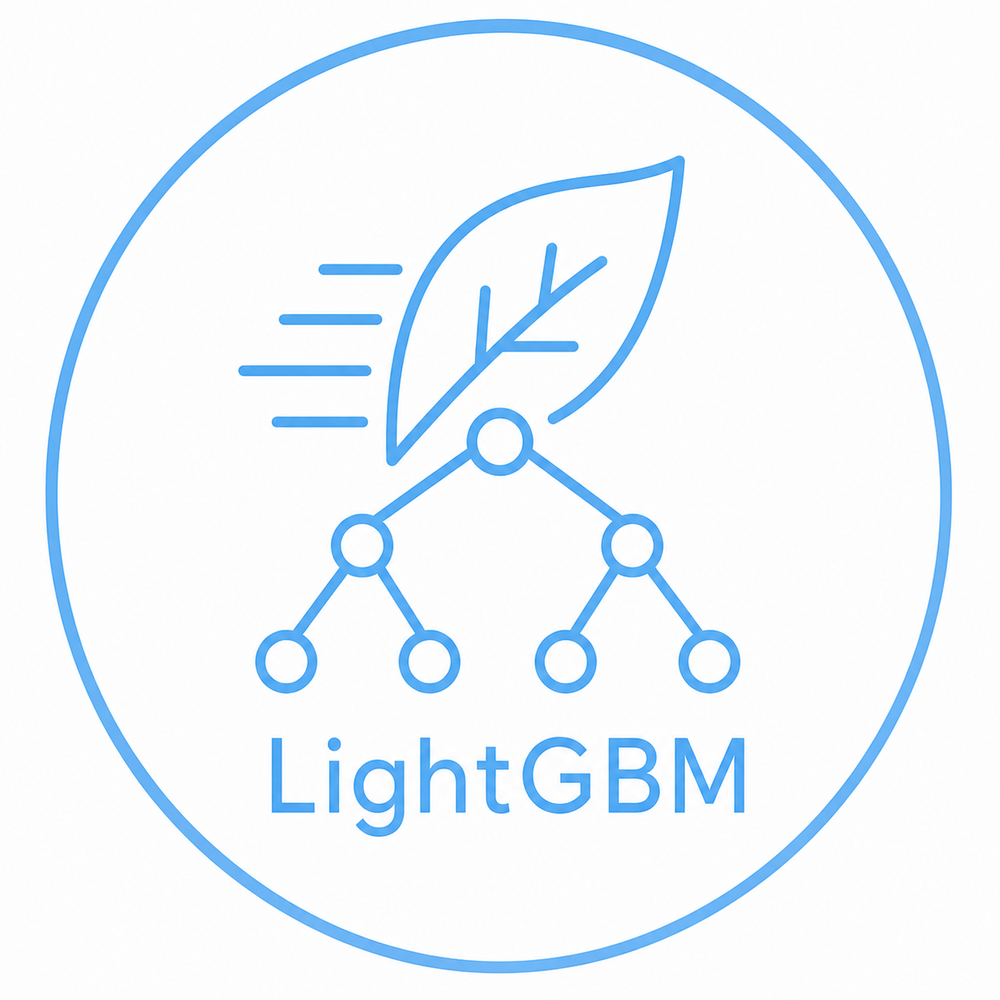
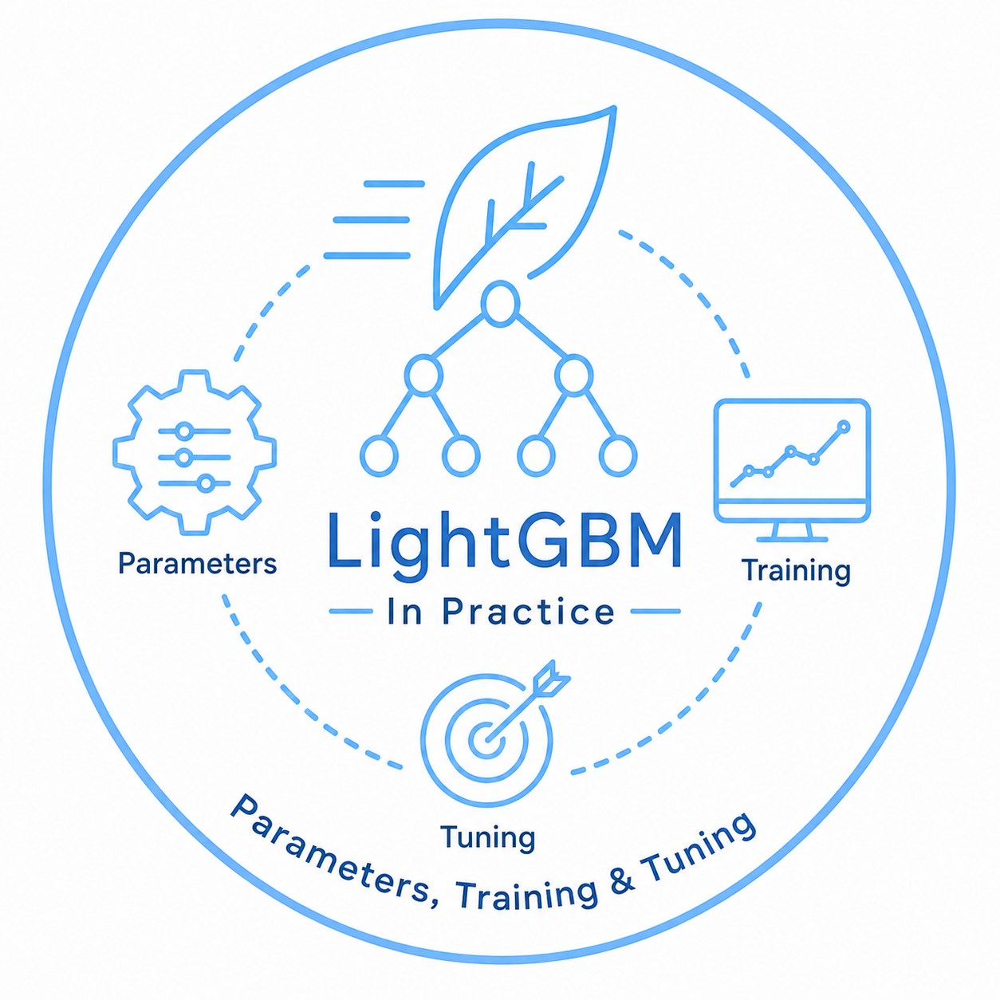

Chapter-1: Gradient boosting & LightGBM basics
Chapter-2: Decision Tree

Chapter-3: LightGBM: XGBoost — Second-Order Gradient Boosting

Chapter-4: LightGBM core concept

Chapter-5: Parameters, Training & Tuning